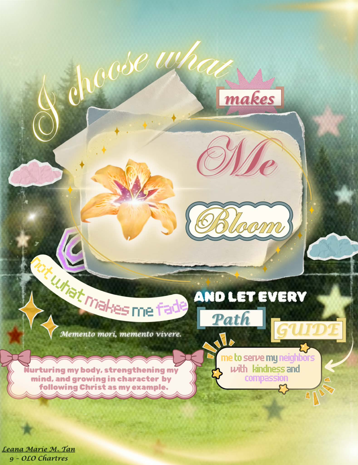
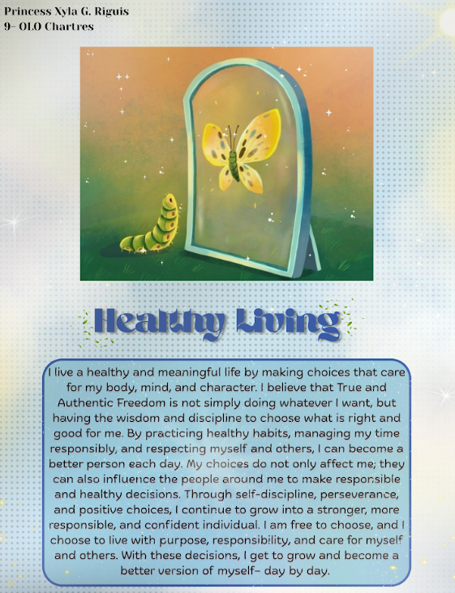
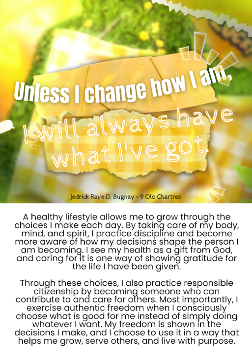
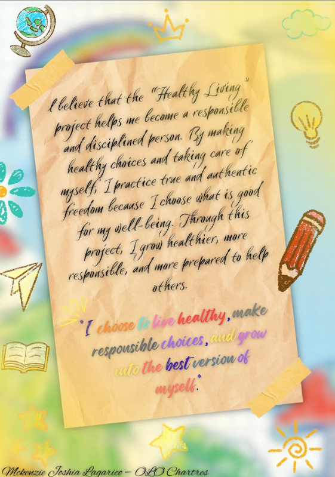
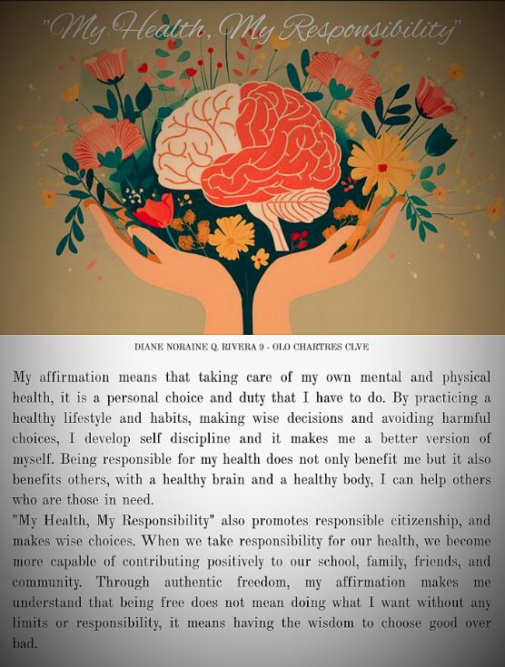
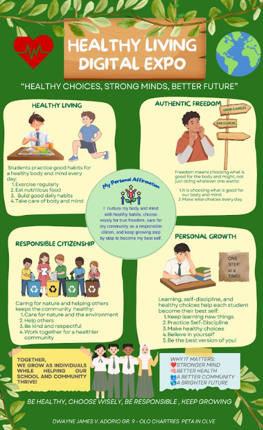

Reflection
The Healthy Living Expo helped us realize that healthy living is not only about taking care of our bodies, but also about making responsible choices in our daily lives. Through the concepts and discussions, we learned how healthy habits can contribute to our personal growth and overall well-being. The experience encouraged us to be more mindful of our choices and to use our freedom responsibly.
Digital Citizenship Affirmation





